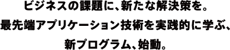
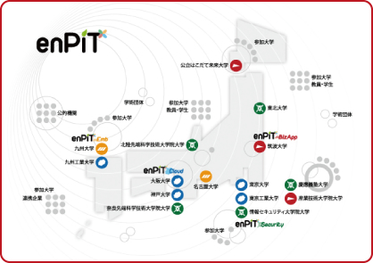

- enPiTは日本国内の15大学が連携して実践的な人材育成を推進する教育ネットワークです。情報技術分野の中から4分野に焦点を絞り、複数の大学が連携して教育を行います。
- 産業技術大学院大学は、筑波大学、はこだて未来大学とともに、ビジネスアプリケーション分野を担当します。
- 本学では社会人が学ぶ専門職大学院としての特徴を生かしたカリキュラムを展開。進化を続ける先端情報技術や情報インフラを有機的に活用し、潜在的なビジネスニーズや社会ニーズに対する実践的問題解決ができる人材の育成を目指します。
| 2013.5.31 | 平成25年度プログラムの受講生募集は終了しました。 |
|---|
本事業は、多数の大学、企業、団体などが密接に連携し、全国的な「分野・地域を越えた実践的教育協働ネットワーク（通称：enPiT エンピット）」を形成することにより、実践的な教育を実施・普及することを目的としています。 大阪大学を中心とした全国の15大学はこの構想に基づき、2013年4月より、情報技術を活用して社会の 具体的な課題を解決できる人材を育成するネットワークを構築。クラウドコンピューティング技術、 セキュリティ技術、組込みシステム技術、ビジネスアプリケーション開発の4分野において、 プロジェクト型学習（PBL）を中心とした実践的な情報教育を開始しました。なお、本事業は、文部科学省「情報技術人材育成のための実践教育ネットワーク形成事業」の一環として行われます。
